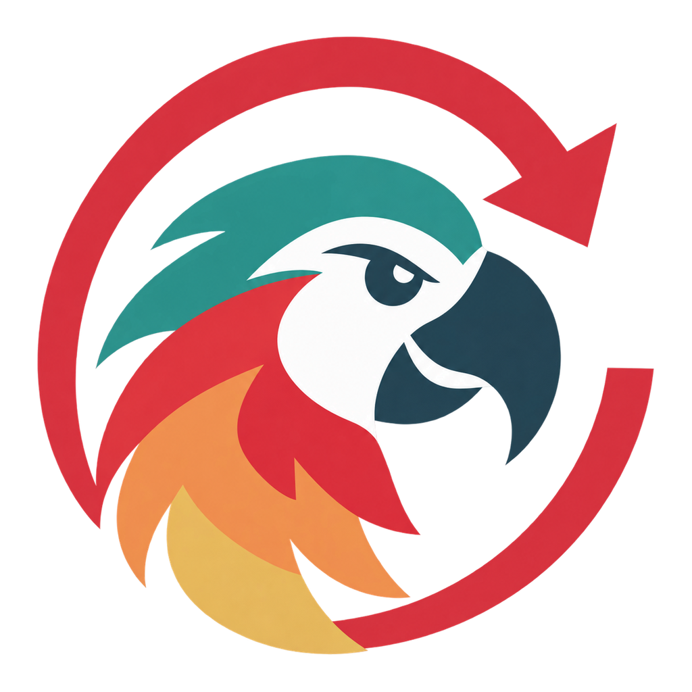

TASK
what to do, and what failed before
AGENTS
lanelanelane
in parallel: local · ssh · containerClaude Code · Codex · Copilot · …VERIFIERS
scripts · rubrics · metrics · critic
run by Relentless itself:
agents can’t touch themNOT MET: AGAIN
the reason goes back
a stronger agent · the task force repairs
HUMAN
approves where it matters
NEXT STEPS
any mix of these
✔ DONE

Relentless
the engine drives the loop and records
every call: resume from anywhere
A workflow can
loop until the job is verified
branch with ifs and conditions
run steps and items in parallel lanes
run lanes remotely: ssh, container, cloud VM
wait for a human, then carry on
try a stronger agent, repair, or escalate